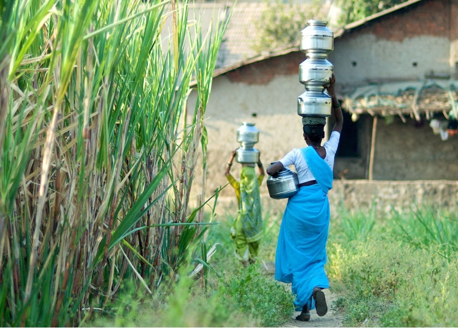

Technology Aided Groundwater Management in India (Collaboration with University of Virginia)
Access to groundwater for irrigation can improve agricultural productivity and may decrease rural poverty, but unrestricted access can lead to over-extraction and subsequent depletion of this critical resource. Providing farmers with information about the groundwater available in their local context can help them prevent crop failures and excessive water withdrawals. In Maharashtra, India, researchers aim to promote farmers’ sustainable use of groundwater by disseminating local hydrological models in an interactive format. Given that groundwater is a shared resource, the participatory and collective management of groundwater may facilitate cooperation among farmers and encourage more efficient water usage. Accordingly, researchers will also evaluate the role that state agricultural extension workers can play in encouraging community participation in managing groundwater.
In partnership with the Department of Agriculture, researchers will assess the impact of information provision, extension services, community participation, and collective action on groundwater conservation. In order to examine the impact of different strategies, researchers will randomly vary villages that receive the following:
- Passive information-sharing: Participants will receive information on a locality’s water budget displayed as a poster in the village.
- Interactive information-sharing and public extension services: In addition to posters, researchers will train extension workers to disseminate information on the locality’s water budget via interactive digital applications and engage farmers to attend meetings in which farmers will be encouraged to set their own goals and rules for water usage, crop choices, and investments in water-saving infrastructure.
- Interactive information-sharing, public extension services, and incentives for collective action: In addition to posters and interactive apps, extension workers will be rewarded for encouraging collective action based on the number of community members who attend meetings and adhere to the rules set by participating farmers.
- Comparison: Participants will receive status quo extension services.
Researchers will collect data on agricultural yield, input costs, groundwater applied as irrigation, crop mix, household income, and village water levels, in addition to levels of community participation.
